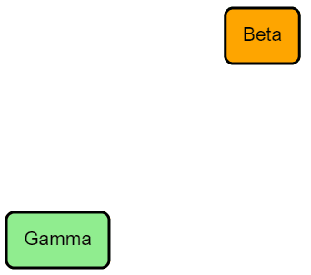

GoJS Change Log
We maintain a GitHub Repository,
which you can star to follow version updates.
We also notify of changes on Twitter.
GoJS 2.1
New Animation Capabilities
GoJS 2.1 contains a number of new features to animate different components of your Diagram.

See the Intro page on Animation
and the Custom Animation sample for more details and examples.
Improved Support For Data Synchronization
GoJS 2.1 contains some new methods to ease integration of GoJS diagrams in applications that maintain their own
data, particularly React apps.
See the Intro page on using GoJS with React and
the gojs-react example project for details and examples.
Also see gojs-react, a package
containing React Components for GoJS Diagrams, Palettes, and Overviews.
Changes for 2.1.15
Changes for 2.1.14
-
Added the Simple Block Editor sample,
demonstrating how to let users easily build block diagrams.
-
Changing Link.fromShortLength or Link.toShortLength no longer invalidates the link's route.
-
Improved the corner curves of orthogonal links when needing to make consecutive turns within double the corner radius.
-
Fixed an incorrect optimization introduced in 2.1.13 updating initial scrollbars when animating.
-
Fixed a bug with undo and redo of ResizingTool operations when the Part.locationSpot is not TopLeft.
Changes for 2.1.13
-
Fixed the cursor shown during a drag in an Overview if some external HTML element changed the cursor.
-
Fixed Diagram.makeSvg when rendering a fill or a stroke that is translucent not to make the opacity too small.
-
Added wait spinners to three of the "Virtualized" samples:
Virtualized,
VirtualizedForceDirectedLayout,
VirtualizedTreeLayout.
These use an image rotated using CSS animation that is positioned in front of the Diagram.
Changes for 2.1.12
Changes for 2.1.11
-
Fixed "Grid" Panels to ignore the order of shapes in the panel when considering whether a larger Shape.interval
shape should suppress a smaller interval shape, or should be suppressed by a larger interval shape.
Changed "Grid" Panels to allow multiple shapes with the same Shape.interval to be drawn in the same orientation
(horizontal or vertical).
-
Fixed documentation by undocumenting the useless AnimationManager.animationReasons property that was accidentally documented.
See the updated documentation for AnimationManager.canStart.
-
Fixed a problem with Brush.isDark sometimes using an incorrect ordering of Brush.colorStops
when determining darkness near the middle of a Brush.
Changes for 2.1.10
Changes for 2.1.9
Changes for 2.1.8
Changes for 2.1.7
-
Added the Packed Hierarchy sample,
which demonstrates a custom PackedLayout for nested circular groups.
-
Added an optional argument to Diagram.clearSelection, and allowed that method to be overridden.
-
The TextEditingTool now only allows one active text editor globally, instead of one per Diagram.
This avoids some focus problems in various browsers.
Changes for 2.1.6
-
The
release/go-module.js file now exports every class, so that you can import only specific classes, instead of go.
For example: import { Diagram, Node, Link, Point, Shape, TextBlock } from ....
-
Added a sample demonstrating generating a PDF file for a Diagram, in the
projects/pdf subdirectory.
The sample is at minimalPDF.
-
Fixed AnimationTriggers erroneously starting when dragging and dropping Parts from another Diagram or Palette.
-
Fixed LinkingTool not deselecting other parts when a new link is created.
Changes for 2.1.5
Changes for 2.1.4
Changes for 2.1.3
-
Fixed a regression (that started in 2.0.0) with AvoidsNodes links improperly re-routing when using the
DraggingTool.
-
Fixed a undo (redo) bug with AnimationTriggers that used location or position on Parts.
-
Improved routing of duplicate links that have Link.adjusting set to a value other than None and have
more than the standard number of points in their route.
Changes for 2.1.2
Changes for 2.1.1
-
Fixed updating of Adornments when there are Bindings from Model.modelData
and that shared object has been modified by calling Model.set.
-
Improved performance when replacing Diagram.model when cleaning up the old model,
which had infrequently resulted in obscure warnings in debug mode about Node.isTreeLeaf.
-
Fixes for loading Models with serialized EnumValues.
-
Performance improvements for concurrent animations.
-
Fixes for consistency of animation state.
This includes modifying when
AnimationStarting and InitialAnimationStarting are
called,
and fixes when default animations are stopped and another is immediately started, such as when loading a new
model in the middle of animation.
-
Fixed Model.fromJson loading models with serialized EnumValues.
-
Improved showing non-default cursors when dragging between diagrams.
-
Fixed the operation of Diagram.handlesDragDropForTopLevelParts when dragging on the elements of a Group.
-
Fixed a bug where Diagram.scrollHorizontalLineChange and Diagram.scrollVerticalLineChange would
not affect scrolling size in some browsers.
-
Fixed a bug where some AvoidsNodes Links would not route properly in nested groups.
Other Changes for 2.1.0:
See the major changes
above.
GoJS 2.0
For 2.0, GoJS has been rewritten in TypeScript, with improvements to stability and documentation.
All customers (with or without source code license) can take advantage of the TypeScript definitions .d.ts
file,
which is much more comprehensive in 2.0.
A source license will now include TypeScript source files as well as JavaScript sources,
and examples of how to build the library into your project with Webpack or Browserify,
should you wish to. This will allow you to remove unused modules from the source code,
such as Layouts, Models, and Tools that you are not using. Note that unless you have strong minification,
you may not see size improvements over the pre-built go.js library, which is highly optimized.
The size of the go.js library has been slightly reduced (both uncompressed and gzipped), from 1.8
versions.
The main library has been reduced by removing many of the uncommon figures.
These are now an extension. (Figures.js)
GoJS can now be run DOM-less, in Node.
We have added the ability to create your own Panels, with the new PanelLayout class.
See an example here.
Changes for 2.0.18
-
Shapes with a shadow and a Shape.fill value of
"transparent" now apply the shadow to the Shape.stroke,
instead of the invisible Shape.fill.
-
Minor scrollbar fixes.
-
Fixed "PanelExpanderButton" click event handler to set InputEvent.handled to true, so that other click
event handlers in containing panels will not run.
-
Improved the Map constructor and Map.addAll method to accept an instance of Map.
Changes for 2.0.17
-
Fixed a bug with scrollbars when setting invisible/hidden Diagram DIVs to visible/unhidden while modifying
their size.
-
Improved orthogonal link segment overlap avoidance in LayeredDigraphLayout.
-
Optimizations for Puppeteer.
Changes for 2.0.16
Changes for 2.0.15
-
Link JumpOver fixes.
-
Fixed an animation bug where some Model loading events might not respect the value of AnimationManager.isInitial.
-
Fixed a bug with AnimationManager.isInitial, where subsequent animations may not occur when it is false.
-
Fixed a bug with Picture drawing when the Picture is scaled to be drawn smaller than a pixel.
During expanding animations, it is possible that such a small scale is applied to a Picture.
Changes for 2.0.14
Changes for 2.0.13
-
When dragging over a different Diagram than the source, such as in a drag from a Palette,
the DraggingTool now checks the Diagram's cursor and only changes it to
"copy"
if the Diagram.currentCursor value is "" or "auto".
-
Drawing fix for some objects disappearing when rotated, and the Diagram is scaled.
-
Optimized Group.move not to try moving member parts when the offset is zero.
This improves the stability of layouts that move groups, such as PoolLayout in some samples.
-
This bugfix potentially breaks old
elementFinished code in Shape
geometries with multiple figures.
Fix for Diagram.makeSVG elementFinished optional argument:
Shapes with multiple geometry figures would pass the final SVG <path> generated as the SVG
element,
when they should be grouped together and pass an SVG <g> instead.
This is what TextBlock already does when there is more than one line of text.
Changes for 2.0.12
-
Fixed a memory leak with internal Picture caching when modifying Panel item arrays.
-
Fixed animation when expanding and collapsing during Diagram load.
-
Fixed drawing in IE when drawing shapes with zero width or height geometries that have a stroke.
-
The DraggingTool will no longer auto scroll the diagram if Diagram.isReadOnly is true or both Diagram.allowMove
and Diagram.allowCopy are false.
This means that, by default, a Palette will no longer auto scroll while the DraggingTool is active.
-
Improved positioning of unrotated link labels when GraphObject.segmentOffset is
go.Point(NaN, NaN)
and the link segment is more vertical than horizontal.
Changes for 2.0.11
Changes for 2.0.10
Changes for 2.0.9
-
Diagram.makeSvg now accepts
callback and callbackTimeout options. This makes
it more like
Diagram.makeImage and Diagram.makeImageData (which have had these options since 2.0.0).
If a callback function is provided, the methods will instead return null
and SVG creation will wait until all Diagram Picture sources are loaded
before creating the SVG and invoking the callback.
-
Fixed a regression with Diagram.makeSvg where it would not draw Pictures that were not yet loaded, even
if they had a valid size.
-
Fixed GridLayouts when used as a Group.layout and when GridLayout.alignment is
go.GridLayout.Position,
to treat GridLayout.wrappingWidth as a width limit, regardless of the Layout.arrangementOrigin.
If you were forced to set GridLayout.wrappingColumn to a value just to be free of the treatment of the
default value for GridLayout.wrappingColumn
(NaN) to indicate the width of the viewport, it is now possible to set GridLayout.wrappingWidth
to respect a smaller value.
-
Fixed maintaining the selection state of selected Parts that change their category.
-
GoJS will step down the Canvas resolution during drawing operations like dragging and panning, which can lead
to "fuzzy" shapes and text during these operations.
This is now only done when a slower frame rate is detected.
-
Drawing performance improvements, especially in well-connected graphs.
-
Fixed a bug with trackpad scrolling reversing at the end of scroll events.
-
Fixed a bug drawing grids on some Overviews.
Changes for 2.0.8
-
Fixed a regression with Pictures from 2.0.4 that would throw an error when setting Picture.source.
-
Fixed potential errors in Binding.ofObject bindings when changing category/template because the bindings
were being evaluated on the copied new template rather than on the original Part.
Changes for 2.0.7
-
Floorplanner 2.0 - New Floorplanner project (
see it
here
), written in TypeScript, at
projects/floorplannerTS. New features include:
-
Wall mitering, with updated dimension links and angle nodes to account for this
-
The ability to define rooms, complete with name, floor type, area, and draggable labels
-
Textures - apply seamless textures to furniture or floors, by use of GoJS Pattern Brushes
-
Full integration with the GoCloudStorage library (save to Local Storage / Google Drive / Dropbox /
OneDrive)
-
Export to PNG
-
Export to SVG
-
Ability to define unit scale in Options menu
-
New intro page on Replacing Diagrams and Models
-
Fixed a bug with Link Shape Geometries not rendering when updated partially off-screen.
-
Fixed a bug with InputEvent.clickCount: Before, on touch devices, this count was incremented only on the
end of the touch, and not the start.
This was discrepant from mouse click behavior, and would lead to problems when Tools queried the clickCount on
touch/mouseDown,
when determining for instance if a particular InputEvent was a double-click. Now, the InputEvent.clickCount
is reported consistently
on mouseDown/touchStart/pointerDown and the corresponding "up" events.
-
GoJS previously would set the Canvas Context's imageSmoothingEnabled property to false.
It no longer does this. If this change causes visual errors, please contact us.
Changes for 2.0.6
Changes for 2.0.5
-
Fix for Shape,defineFigureGenerator where it would incorrectly throw an error on Geometry bounds being
too large, when they were not.
-
Some touch events would cause [intervention] warnings in some browsers when canceled because GoJS would call
preventDefault on non-cancelable events.
This has been fixed.
- Fixed a bug with Diagram.zoomToFit when Diagram.scrollMode was set to Diagram,InfiniteScroll.
-
Fixed a bug where GuidedDraggingTool was snapping the whole part to a guideline instead of the
location object.
Changes for 2.0.4
-
Fixed the TypeScript declaration of GraphObject,make to allow an
HTMLDivElement as an
argument when building a Diagram.
Also added some type overloads of that function to reduce apparent type errors with correct code.
-
Fixed some apparent non-determinism in the results of LayeredDigraphLayout upon an initial layout.
-
Animation upgrades, notably when you move a port during an animation, connected Links will properly re-route.
Changes for 2.0.3
-
Improved data binding of tooltips and context menus for item panels to avoid temporarily setting Panel.data
incorrectly.
-
Enhanced the meaning of UndoManager.maxHistoryLength so that a value of zero causes no Transactions
to be
remembered in the UndoManager.history but allows commits and rollbacks to occur normally.
-
Fixed a bug from 2.0.1 with Diagram.makeSvg incorrectly re-using SVG elements.
-
Fixed a bug from 2.0.0 with Diagram.makeSvg when drawing dashed paths.
-
Deployment fixes for electron apps.
Changes for 2.0.2
-
Updated the Charts in Nodes sample to use Chart.js.
-
Deployment fixes. This release should resolve "Cannot use 'in' operator to search for 'go' in undefined"
errors in some browser contexts.
Changes for 2.0.1
-
TypeScript declarations: we have created the ObjectData interface, defined as
{ [index: string]: any; },
to allow easier manipulation of data Objects, mostly in Models and change notification.
Many methods and properties now use ObjectData instead of Object in the go.d.ts
file.
The compiled JavaScript is unchanged by these better type declarations.
-
We have added interface declarations for the "options" argument to
Diagram.makeImage, Diagram.makeImageData, and Diagram.makeSvg.
Also we have added more precise declarations replacing the
string type for arguments to
Diagram.addDiagramListener, Diagram.removeDiagramListener, Diagram.scroll,
and for the properties
Shape.strokeCap, Shape.strokeJoin, and TextBlock.textAlign.
JavaScript calls to these methods are unchanged by these better type declarations.
-
We have improved the declarations for GraphObject,make.
You may find that you will need to cast the result of calling this function or pass a result type when the
first argument is a string. For example:
$(go.Node, . . ., { contextMenu: $<go.Adornment>("ContextMenu", . . .) }, . . ..
Also, you may find that event handlers need to have precise type declarations for the arguments. For example:
$(go.Node, . . ., { click: function(e: go.InputEvent, node: go.GraphObject) { . . .} }, . . ..
JavaScript calls to this function are unchanged by the better type declarations for GraphObject,make.
-
The HTML Divs created for the default context menu now have CSS class names: 'goCXforeground' and
'goCXbackground'.
The HTML textarea for the TextEditingTool now has the CSS class name: 'goTXarea'.
-
When supplied with an argument, CommandHandler.expandTree, CommandHandler.collapseTree,
CommandHandler.expandSubGraph, and CommandHandler.collapseSubGraph
incorrectly operated on the Diagram.selection if the argument Part was already in an expanded/collapsed
state.
This has been fixed not to do so.
-
Performance improvements with JumpOver/JumpGap Links.
-
Fixed a bug with inappropriate invalidation of link routes when a Group was moved.
-
Fixes for SVG rendering of Pattern brushes.
Changes for 2.0
-
Build GoJS from TypeScript Source:
GoJS can be compiled from the TypeScript source files.
Dynamically building GoJS this way allows unused modules/code to be removed.
See the new Intro page on Building GoJS from TypeScript sources
-
GoJS now runs in DOM-less environments like Node:
GoJS can run in DOM-less environments, like Node, without any dependencies.
See the new Introduction page on GoJS with Node.js.
GoJS cannot guarantee accurate Picture and TextBlock measuring in DOM-less environments,
so if you do not set desiredSize (or width and height) on
TextBlocks or Pictures,
you may want to use GoJS inside of a headless browser project, like Chrome's Puppeteer.
We detail how to use GoJS with Puppeteer in the Server Side Images
Introduction page.
DOM-less environments can be used for server-side work, such as computing complex layouts.
Headless environments such as Puppeteer can be used to do layout calculations or to make
server-side images of Diagrams.
See the note about Diagram.viewSize below.
-
Reworked part-moving and added a new class: DraggingOptions:
DraggingOptions holds properties for Part-moving operations, and
DraggingInfo holds relative positions of dragged objects, for use in snapping and cancellation.
The DraggingTool has an instance of the DraggingOptions class, and
setting properties like DraggingTool.isGridSnapEnabled modifies this instance.
If the Diagram has no DraggingTool associated with it, it falls back to the default properties of the class.
You can create your own to pass to part-moving methods.
Typically you do not need to create an instance of this class.
Moving parts has been reworked. Diagram.moveParts, Diagram.computeMove, and
CommandHandler.computeEffectiveCollection now accept
an additional argument for a DraggingOptions instance.
This allows fine-grained control over programmatic moving of nodes.
Typically, these options are supplied by the DraggingTool.dragOptions instance.
DraggingTool.computeMove functionality has been moved to Diagram.computeMove,
and DraggingTool.computeEffectiveCollection functionality has been moved to CommandHandler.computeEffectiveCollection.
These methods remain on their original class for compatibility when overriding,
but the main functionality has been moved to the Diagram class for tree-shaking reasons.
-
Diagram and Layer:
-
Added Diagram.mouseEnter and Diagram.mouseLeave to allow for functions to be called on
mouseenter and mouseleave events
on the Diagram's Canvas element.
-
When mouse leaves a Diagram, Diagram.lastInput is now set to the "mouseout" MouseEvent.
-
Added
"GainedFocus" and "LostFocus" DiagramEvents,
which allow functions to be called when the Diagram's canvas gains or loses focus,
without having to access any of the DOM within the Diagram.div.
-
Added Diagram.findPartsAt, Diagram.findPartsIn and Diagram.findPartsNear as
convenience functions.
These functions call Diagram.findObjectsAt, Diagram.findObjectsIn or Diagram.findObjectsNear
and only return Parts in non-temporary layers, rather than all GraphObjects.
-
Added Diagram.viewSize which can be used to set a viewport size in DOM-less environments.
See the new Intro page on GoJS with Node.js.
-
Added Diagram.handlesDragDropForTopLevelParts which determines whether drag-and-drop events
may be bubbled up to the diagram if not handled by a Part.
-
Diagram.moveParts, Diagram.copyParts, and Diagram.computePartsBounds now accept an
Array of parts,
in addition to their former iterable collection of Parts.
-
Diagram.makeImage and Diagram.makeImageData now accept
callback and callbackTimeout
options.
If a callback function is provided, the methods will instead return null
and image creation will wait until all Diagram Picture sources are loaded
before creating the image and invoking the callback.
-
Models:
-
Parts:
-
Panels and PanelLayout:
-
GraphObjects and Geometry:
-
GraphObject.cloneProtected is now documented. It functions in a similar
fashion to Model.cloneProtected and Layout.cloneProtected,
and is necessary for properly copying additional properties on custom subclasses of GraphObject.
-
Added properties Picture.flip and TextBlock.flip, which default to GraphObject,None,
can be set to GraphObject,FlipHorizontal, GraphObject,FlipVertical,
or GraphObject,FlipBoth to flip a Picture's or TextBlock's rendering.
-
Added properties Shape.graduatedSkip and TextBlock.graduatedSkip, which allow ticks/labels
along a Graduated panel
to be skipped, causing gaps. These properties take a function, and default to null meaning no ticks/labels
will be skipped.
-
Added predefined builders for "ToolTip" and "ContextMenu" for ease of template creation.
The definitions for these builders can be found in Buttons.js
-
Added TextBlock,WrapBreakAll as a value for TextBlock.wrap,
which allows text to break at individual characters.
-
Added TextBlock,getBaseline, TextBlock,setBaseline, TextBlock,getUnderline, TextBlock,setUnderline,
which give more control over the height to that lines of text and underlines are drawn.
-
Added GraphObject.getDocumentBounds, as a convenient way to avoid having to call GraphObject.getDocumentPoint
on all four corner points of a rectangular area.
-
Layouts:
-
Tools and Commands:
-
Brushes:
-
Added Brush,isDark instance and static methods, which determine whether a
Brush or CSS color string is "dark", based on luminance.
This can be useful in bindings to determine text colors.
-
Added Brush,mix to allow for the mixing of two CSS colors.
-
Samples and Extensions:
-
Many samples have been translated into TypeScript, in the
samplesTS folder in the kit.
-
Added PanelLayout, demonstrating Panel,definePanelLayout.
-
Added extensionsTS/PackedLayout,
which demonstrates a custom layout for packing nodes closely into a rectangular or elliptical area.
(Source is TS only)
-
Added Wordcloud, which demonstrates a wordcloud using a PackedLayout.
-
Added samplesTS/minimalModule,
which demonstrates using GoJS as an ES6 module.
(Source is TS only)
-
Added OverviewResizing,
which demonstrates the OverviewResizingTool, used for resizing an Overview.box.
This has replaced functionality that used to be built-in.
It is defined in both the "extension" and "extensionsTS" folders.
-
Added extensionsTS/ZoomSlider,
which demonstrates an HTML slider that can zoom in/out of a GoJS diagram.
Incompatible 2.0 changes and removals
Many of the minor changes were made to order to increase the modularity of the implementation.
Nevertheless we have tried to maintain API compatibility with version 1.*.
-
Most Predefined Shape figures
In order to shrink the size of the GoJS library we no longer define most predefined figures in the library.
Instead, you can find all of their definitions in the Figures.js
file.
You can load this file or simply load only those figures that you want to use by copying their definitions
into your code.
For example, the Shapes sample loads this file.
A number of very common figures remain predefined in version 2.0.
The figures that remain in 2.0 are: "Rectangle", "Square", "RoundedRectangle", "Border", "Ellipse",
"Circle",
"TriangleRight", "TriangleDown", "TriangleLeft", "TriangleUp", "Triangle", "Diamond", "LineH", "LineV",
"BarH", "BarV", "MinusLine", "PlusLine", "XLine".
Note also that the definitions that are in the Figures.js
file
are not entirely the same as their definitions in version 1.*.
A number of figures have been improved and some figure parameters have been added or changed meaning.
To use the old predefined figures, you can load or copy from the "extensions/Figures.js" file of an
earlier version of GoJS.
The static function Shape,defineFigureGenerator now has additional checks for geometric
validity.
To be valid, the generated Geometry bounds must be equal to or less than the supplied width and height.
-
List, Set, and Map constructors no longer take type arguments, but are generic in TypeScript
The GoJS List, Set, and Map constructors no longer take
type arguments and no longer do type checking in JavaScript.
However, when using TypeScript these classes are now generic and will do type checking at compile time.
In JavaScript, instead of new go.List(go.Point), write new go.List().
For compatibility, you can still provide an element type argument, but it is not used and not checked.
In TypeScript, instead of new go.List(go.Point), write new go.List<go.Point>(),
and the TypeScript compiler will enforce the List element typing.
All three constructors now take an optional Iterable or Array argument that
provides the initial elements for the new collection.
In a future major version, we may replace go.Map and go.Set with
enhanced ES6 Map and Set classes.
-
List.add, Set.add, and Map.add now all return the collection itself instead of a boolean.
This is for increased compatibility with ES6
Map and Set collections.
-
Panel.type used to be of type EnumValue and now is of type PanelLayout.
This may affect data-bindings, in the uncommon case where a template binds Panel.type.
You should make sure that any data bindings are returning possible type values such as go.Panel.Horizontal.
Data binding Panel.type without using a conversion function will not work with old data,
since the property has changed type.
-
For Spot Panels, the
offsetX/offsetY of GraphObject.alignmentFocus has been
reversed.
If you are using the offsetX/offsetY values in GraphObject.alignmentFocus,
this may cause your panels to be arranged differently.
You will need to flip the sign to retain compatibility.
This change is to rectify a design inconsistency with Spot Panel elements.
The offsetX/offsetY values now correctly offset the alignment focal point,
and not the Spot Panel's element itself.
-
CommandHandler.defaultScale has been moved to Diagram.defaultScale
As with many of the other properties and methods that have been "moved" to other classes,
this is to improve the ability to tree-shake code out of your app.
-
DiagramEvent.cancel
The only use for this property was with the "SelectionDeleting" DiagramEvent
in order to prevent the user from deleting the selection.
Where one might have written this Diagram listener:
"SelectionDeleting": function(e) {
if (e.diagram.selection.any(function(p) { return p.data.key.indexOf("e") >= 0; })) {
e.cancel = true;
}
}
one can write the equivalent functionality with this CommandHandler.canDeleteSelection method
override:
"commandHandler.canDeleteSelection": function() {
return !this.diagram.selection.any(function(p) { return p.data.key.indexOf("e") >= 0; })
&& go.CommandHandler.prototype.canDeleteSelection.call(this);
}
Overriding the method supports the updating/enablement of commands that call CommandHandler.deleteSelection.
Furthermore not having a "cancel" property on the DiagramEvent avoids any potential problems that might occur
if there
are multiple listeners for the "SelectionDeleting" event.
The "SelectionDeleting" DiagramEvent remains useful,
but not for controlling whether or not the deletion should happen.
-
Button styling
Updated the styling of buttons. Buttons are now rounded rectangles and have an effect when pressed.
Some predefined buttons have increased a small amount in size:
- TreeExpanderButton: 3 pixels wider and taller
- SubGraphExpanderButton: 3 pixels wider and taller
- PanelExpanderButton: 3 pixels wider and 5 pixels taller
Definitions for buttons can be found in the Buttons.js
file.
-
Improved computation of Link.midPoint and Link.midAngle to be faster and
changed some cases where labels fell on very small segments of a link.
Orthogonal bezier links will also have more accurate label placement with the new methods.
-
Diagram.initialContentAlignment's default value of Spot,Default now acts like Spot,Center,
instead of Spot,None.
Basically, if you don't set Diagram.initialContentAlignment,
the contents will now show up in the middle of the viewport rather than at the top-left corner.
-
Custom TextEditingTools (the values of TextEditingTool.currentTextEditor and TextBlock.textEditor)
can no longer be set to HTML Elements.
They must be an instance of HTMLInfo, which was introduced in version 1.7.
-
The ResizingTool, when computing a cell size ResizingTool.computeCellSize,
no longer checks the DraggingTool's possible grid snapping cell size.
As with many of the other properties and methods that have been "moved" to other classes,
this is to improve the ability to tree-shake code out of your app.
-
Swapped the order of the RotatingTool and ResizingTool in the ToolManager.mouseDownTools
list.
This is to cause the RotatingTool's Adornment to be behind the ResizingTool's Adornment if both are present.
-
Moved the OverviewResizingTool,
which had been completely internal, out of the core library into an extension.
The Overview.box can no longer be resized unless OverviewResizingTool has been loaded.
-
Removed GraphObject.fromEndSegmentDirection and GraphObject.toEndSegmentDirection.
One can override Link.getLinkDirection to achieve the same effects.
-
Changed Link.getLinkPoint to treat a GraphObject.fromSpot or GraphObject.toSpot with
Spot.x and Spot.y exactly 0.5 (but with any Spot.offsetX and Spot.offsetY)
as if it were Spot.None but focussing on that spot.
This allows for links to stop at the edge of a shape while going towards a point other than the center of the
port.
In the past the link direction for spots at (0.5, 0.5) was always assumed to be zero,
going rightwards to or from the port, which was not intuitive or useful.
-
The DiagramEvent.subject for "SelectionMoved" and "SelectionCopied" DiagramEvents is now a Set
of the moved or of the newly copied Parts, not just the Diagram.selection.
This makes it easier to find the unselected Parts that were moved or copied.
-
The LayoutNetwork constructor and constructors for subclasses of LayoutNetwork
now require the Layout as the first argument.
This was needed for better code, to avoid potential null references.
-
The LayoutVertex and LayoutEdge constructors and constructors for subclasses of LayoutVertex
and LayoutEdge now require the LayoutNetwork as the first argument.
This was needed for better code, to avoid potential null references.
-
Placeholders in Groups now take up zero size when collapsed,
even when there is padding in the Placeholder.
You can add a GraphObject.margin on the Placeholder or
specify its GraphObject.minSize to make sure that has a size when collapsed.
Placeholders in Groups now respect GraphObject.minSize.
-
Layout.isRealtime is now tri-state, with possible values being true, false, or null.
The default is now null.
A null value is treated as true for a Diagram.layout but false for a Group.layout.
This reduces the number of situations where there can be surprising layout behavior when moving
or resizing member nodes, while continuing to support explicit control of this property.
-
Diagram.scrollsPageOnFocus has changed its default value from true to false.
This avoids an occasional end-user complaint.
-
Diagram.allowDrop has changed its default value from false to true.
This helps avoid a common error when starting to use a Palette or a second Diagram.
-
Overviews now include the observed diagram's viewport bounds so the Overview.box will always be
visible.
This reduces confusion that some end-users experience.
-
Tool.doCancel now sets Tool.transactionResult to null before calling Tool.stopTool,
in order to cause any call to Tool.stopTransaction to roll-back any transaction.
Changes for 1.* are here.